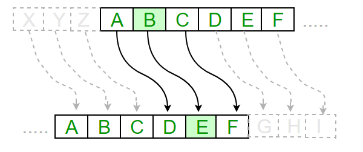
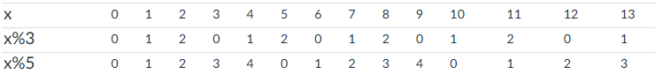

When we talk about characters, it is hard to avoid talking about the ascii table, where each character is assigned a specific number value. When characters are assigned a location in your computer's memory, it uses that value as the binary. This means that the number 65 and the character 'A' have the same binary representation, we just interpret it differently depending on which data type we are using: the Number type or the Character type.
p5 comes with a couple of functions that are useful for changing types between the Number and Character data types: char() and unchar(). This helps us use number techniques to create characters.
For example, Open the Random Letter workspace
function randomLetter(){
let randNum = floor( random(65,91)); //a random INTEGER from 65 - 90
return randNum;
}
This function's purpose is to return a random capital letter, but it doesn't quite do so yet. So far we have only generated a random number and returned it. Run the program and hit the Random Capital button a few times. You'll see that it produces a number instead of the capital letter it's supposed to.
- The random number includes 65-90. Take note that the 91 that you see is not included because of how the random function works. It will at most return a 90.99999, which is converted to a 90 when it is floored.
- This specific number range corresponds exactly to the ascii values of all the capital letters.
Since the random() function produce a value that is a Number data type, then it continues to be interpreted as a Number as it's displayed. Since we want a Character, we will rely on p5's char() function, which does the conversion for us.
function randomLetter(){
let randNum = floor( random(65,91)); //a random INTEGER from 65 - 90
let randChar = char( randNum ); //convert it to a character
return randChar; //return the character version
}
Now, if you run your program and mash the Random Letter
The provided randomLetter() function only returns capital letters. Use your knowledge of the ascii table and modify it to only return lowercase letters.
Test it thoroughly before moving on
Open the Answer Key 2.0 workspace which is similar to the one from the previous assignment. Remember that the answerKey() function accepted a number, then returned a String filled with random characters.
5 -> "ABDDC"
15 -> "ABCDBCDCCADCABA"
Your previous attempt likely involved combining a random number with an if statement to help decide which character to add.
Implement this answerKey2() function to perform the same task, but this time if statements are banned. You should instead generate a random number between 65("A") and 68("D") and use the char() function to turn it into a character before adding it to your accumulator string.
Open the Alphabet Generator workspace.
The alphaGen() function has no input string. Its purpose is to use a loop to generate a string that contains the alphabet, with capital and lowercase versions of each letter.
AaBbCcDdEeFfGgHhIiJjKkLlMmNnOoPpQqRrSsTtUuVvWwXxYyZz
No, you will not get credit if you use copy-paste.
Instead, remember two things:
- Looping the alphabet is like looking through a specific number range if you have the char() function.
- A lowercase letter's ascii value is always 32 larger than its uppercase version.
Write a loop whose looping variable represents all the ascii numbers of the alphabet, and accumulates their character versions into a string to return. You do not need a separate loop for the lower case letters, as you can get their values by adding 32 to the uppercase ascii value.
Open the Caesar Cipher workspace.
In cryptography, a shift cipher is a very basic way of encrypting a message.

By replacing each letter with one a fixed distance down the alphabet, you can make a message hard to read, but decodable.
Plain A B C D E F G H I J K L M N O P Q R S T U V W X Y Z
Cipher D E F G H I J K L M N O P Q R S T U V W X Y Z A B C
When encrypting, a person looks up each letter of the message in the "plain" line and writes down the corresponding letter in the "cipher" line.
Plaintext: THE QUICK BROWN FOX JUMPS OVER THE LAZY DOG Ciphertext: WKH TXLFN EURZQ IRA MXPSV RYHU WKH ODCB GRJ
The Caesar Cipher is one of the most famous shift ciphers in history. He used a "shift right three" cipher, where every letter is replaced with a letter three values higher up the alphabet.
Find the caesarCipher() function in your workspace. Its purpose is to accept a String and return it after encrypting it using the caesar cipher. Luckily we are starting to consider characters as numbers, so shifting three letters down the alphabet is the same as adding three to an ascii value.
In order to shift each character in the original string by three, we need a way of determining what each character's number value is. This is a conversion that we have yet to do, as we have been focusing on turning numbers into characters so far.
p5's unchar() function performs the opposite operation as the char() function. It takes a character as a parameter and returns its corresponding number.
let letter = "A"; let letNum = unchar( letter ); //letNum gets 65, the ascii value of "A"
A 'shift' will involve first converting the character to a number, then adding to the number before calling the char() function again.
Implement the caesarCipher() method by looping through each character in the parameter string and using a combination of unchar() and char() to performing a character shift before adding the shifted character to an accumulator string.
When you finish, test your function to make sure that "HELLO" gets encrypted to "KHOOR"
We need to worry about what happens for letters like X, Y, and Z. When you add three to their ascii values you will land outside of the alphabet. Instead we need them to 'wrap around', meaning that after Z we start over again with A, B, C, etc.
Add an if statement to your function to help handle those special cases.
Test your caesarCipher() function again with the following message to make sure that everything turns out alright:
THE QUICK BROWN FOX JUMPS OVER THE LAZY DOG
WKH#TXLFN#EURZQ#IRA#MXPSV#RYHU#WKH#ODCB#GRJ
The #'s are the symbol that spaces get converted to. Optionally you can modify your loop to skip spaces and make things more readable.
WKH TXLFN EURZQ IRA MXPSV RYHU WKH ODCB GRJ
Double check to make sure that the X, Y, and Z are properly handledbefore moving on
The unCaesar() function performs the opposite function as caesarCipher(). It shifts each character down three instead of up three. You should also worry about wrap around, this time for the early letters that go outside of the alphabet when you subtract.
To test, write a message in the text box and use the Caesar Cipher button to encrypt it. Then use copy-paste to enter the encrypted message back into the text box and hit the Un-Caesar button. You should get the exact message back.
A Caesar Cipher is simple to implement, but its simplicity also makes it simple to decode. If someone knows that you're using a Caesar Cipher, they only have to unscramble it with at most 25 different shift values before finding the correct one.
A Vigenere Cipher is similar to a caesar cipher, except it comes with a key to help decrypt the message. Each character in that key tells us how much to shift each character. A = 0, B = 1, C = 2, etc. So the key "ABCBA" really tells the shift to be 01210.
So if the message were "HELLO" and the key was "ABCBA", the result would be "HFNMO"
the 'H' would shift 0 -> 'H'
the 'E' would shift 1 -> 'F'
the 'L' would shift 2 -> 'N'
the 'L' would shift 1 -> 'M'
the 'O' would shift 0 -> 'O'
Open the Vigenere Cipher workspace
If you run it right away, you will see that there are text fields and a button that help you enter a Message and a Key. Your responsibility is to complete the vigenere() function. It accepts the message and key as parameter strings, and returns the encoded text.
Like before, you will be taking each character in the parameter string and shifting it before adding it to an accumulator String. This time, each character has a different amount to shift, which can be determined by looking in the KEY string at the same index. Once you have the character from key, use unchar() convert it to a Number, and then subtract 65 to get it into the correct range. This should be the value that you need to shift the character before adding it to the accumulator String. For now, you may assume that the key is the same length as the message you're encoding, so key will have the same indices as the message.
Test the String "HELLO" with a key of "ABCBA", to make sure that you get "HFNMO"
We are using short messages as an example, but it is very likely that that the message that you're decoding is longer than the KEY string that you're using.
For Example: Try encoding the message "ATTACKATDAWN" with the key "CAT". You should see it start failing after the first three characters as it looks for characters at indices that don't exist in the key. Undefined values will start making their way into the string and making a mess. The solution is to 'repeat' the key until you have enough to cover the whole message.
ATTACKATDAWN CATCATCATCAT
We could write a loop that generates a repeating version of the key, but we can do less work by using a little bit of math to help us. One thing to note about mod is that it creates a repeating pattern when used on increasing values.
The table below shows increasing values for x, but also shows those values modded by 3 and the 5.

Notice that X%3 is zero for all multiples of three, and x%5 has zeros at the fives. We have already used this pattern to help test divisibility with expressions like: x%2 == 0.
Modding by a number in this way also creates a 'wrap around counter', which increases to a certain value before starting back at zero, repeating infinitely.
This pattern of values is helpful in our Vigenere Cipher with a longer message than key. Below we have labeled the indices of the message, as well as the index in the key that we would get the key character from.
Message: ATTACKATDAWN messageIndex: 0123456789 KEY: CATCATCATCAT keyIndex: 012012012012
Notice that keyIndex is a 'wraparound counter' pattern, which is the same as x%3:. We can use this trick to make sure that we always get an index that's within the range of a String.
Modify your vigenere Function to work for messages of any length. This means modifying the index in KEY that is being accessed. Instead of matching the same index that you're using in the message string exactly, modify your existing call to key's charAt() to use mod to make sure that it 'wraps around'.
let keyChar = key.charAt( i % key.length);
Test your program with the following to make sure that your function works properly:
Message: MISTERSACCO Key: RULES Ciphertext: DCDXWIMLGUF